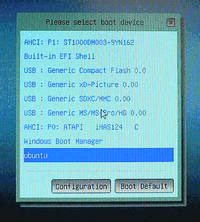

efibootmgr
Dieser Artikel wurde für die folgenden Ubuntu-Versionen getestet:
Dieser Artikel ist größtenteils für alle Ubuntu-Versionen gültig.
Zum Verständnis dieses Artikels sind folgende Seiten hilfreich:
|  |
| Beispielbild eines EFI-Boot-Menüs. |
Das Paket efibootmgr ist ein Linuxprogramm um die Konfiguration des (U)EFI‐Boot-Menüs (siehe Beispielbild links) im NVRAM aus Ubuntu heraus im Terminal zu verändern.
Neben dem Auflisten können EFI-Boot-Einträge eingerichtet, vorhandene entfernt oder die Bootreihenfolge festgelegt werden. Ubuntu legt bei einer EFI-Installation in der Regel alle erforderlichen Einträge an, so dass keine manuellen Nacharbeiten erforderlich sein sollten.
Hat man ein Dualboot mit Windows 7 (SP1), 8 und höher - so kann man diese Abfragen, Arbeiten sowie Veränderungen auch unter Windows in einem GUI vornehmen. Es muss dazu unter Windows das Programm EasyUEFI  installiert sein.
installiert sein.
Achtung!
Beide Programme nehmen Veränderungen am NVRAM des Mainboards vor und sollten nur mit Bedacht ausgeführt werden.
Es darf bei einigen Rechnern in der Firmware (Setup) das secure-boot nicht aktiviert sein - ansonsten werden keine Einträge in das NVRAM übernommen!
Installation¶
Bei Nutzung eines im EFI-Modus gestartetem Live-Systems (Live-CD/Live-USB) muss das Paket efibootmgr erst installiert werden. Bei einer vorhandenen EFI-Ubuntu-Installation sollte es bereits installiert sein. Das Programmpaket kann direkt aus den Paketquellen installiert[3] werden:
efibootmgr
 mit apturl
mit apturl
Paketliste zum Kopieren:
sudo apt-get install efibootmgr
sudo aptitude install efibootmgr
Bedienung¶
Die Ausführung erfolgt im einem Terminal [1] mit Rootrechten [2]:
efibootmgr OPTIONEN
Hinweis:
Das System muss im (U)EFI-Modus gestartet sein. Dies kann man daran erkennen, dass das Verzeichnis /sys/firmware/efi existiert. Die Verknüpfung des NVRAM-Eintrags mit der EFI-System-Partition (ESP) erfolgt über eine eindeutige GUID. Wird diese GUID verändert, z.B. durch eine Neuanlage der ESP, dann müssen diese Einträge neu erstellt werden – dies gilt auch beim Zurücksetzen eines EFI-Systems auf die Standardeinstellungen.
Optionen¶
Eine komplette Auflistung aller Optionen ist der Manpage zu efibootmgr zu entnehmen.
| Auswahl von Optionen | ||
| Optionen | Beschreibung | |
| kurz | lang | |
-a | --active | Aktivieren eines Booteintrags |
-A | --inactive | De-Aktivieren eines Booteintrags |
-b | --bootnum XXXX | Zuweisen des Booteintrags, der mittels weiterer Optionen modifiziert werden soll (XXXX = der Hexwert des Eintrags) |
-B | --delete-bootnum | Löschen eines Booteintrags |
-c | --create | Erzeugen eines neuen Booteintrags. In Verbindung mit der vorangestellten Option --bootnum XXXX kann die Zuweisung gezielt auf einen freien Eintrag erfolgen. |
-d | --disk DEVICE | Zuweisen des Datenträgers[4] auf dem der Bootloader liegt (Standard ist: /dev/sda). |
-g | --gpt | Erzwingt die Partitionstabelle auch auch dann als GPT zu behandeln, wenn die GPT-Signatur "EFI PART" vorhanden ist, aber der "Protective MBR" ungültige Werte enthält. |
-l | --loader 'NAME' | Verzeichnis und Name des Bootloaders, Ubuntu verwendet standardmäßig den Pfad \\EFI\\ubuntu\\grubx64.efi (Standard, wenn --loader nicht angegeben wird, ist: \\elilo.efi) - Windows-Syntax mit Backslash beachten. |
-L | --label BEZEICHNUNG | Bezeichnung/Name des Bootloaders im EFI-Menü. Der Name ist frei wählbar, z.B. "GRUB2" (Standard ist: "Linux") |
-n | --bootnext XXXX | Einstellen des Bootloaders der beim nächsten Neustart genutzt werden soll (XXXX = der Hexwert des Eintrags) – Dieser Eintrag überschreibt die Bootreihenfolge einmalig, nach dem nächsten Start gilt wieder die Originaleinstellung. |
-N | --delete-bootnext | Löschen des Bootloader-Eintrags zu --bootnext XXXX |
-o | --bootorder XXXX,YYYY,ZZZZ,... | Einstellen der Bootreihenfolge (XXXX, YYYY, ... = Hexwerte der Einträge) – wird ein Bootloader nicht gefunden, dann wird automatisch auf den nächsten, aktiven Eintrag weiter geschaltet und versucht diesen zu starten. |
-O | --delete-bootorder | Löschen der Bootreihenfolge |
-p | --part PARTITION | Die EFI-System-Partition (ESP)[4] in der die Bootloader hinterlegt sind (Standard ist: 1) |
-q | --quiet | Meldungen unterdrücken |
--test DATEINAME | Die Veränderungen werden nicht in das NVRAM geschrieben, sondern in die angegebene Datei | |
-t | --timeout SEKUNDEN | Setzen des Timeouts zwischen Anzeige des Menüs und Start des Bootloaders |
-T | --delete-timeout | Löschen des Timeouts |
-v | --verbose | Erweiterte Informationsausgabe |
-V | --version | Anzeige der Versionsnummer |
-w | --write-signature | Schreiben einer eindeutigen Signatur in den MBR (sofern benötigt) |
Beispiele¶
Auflistung aller Einträge (Kurzformat)¶
Ohne die Angabe einer Option werden die Einträge in einem Kurzformat aufgelistet.
sudo efibootmgr
Musterausgabe:
BootCurrent: 0019 BootNext: 0005 Timeout: 10 seconds BootOrder: 0019,001A,0006,0007,0008,0009,000A,000B,000C,000D,000E,000F,0010,0011,0012,0013 Boot0000 Setup Boot0001 Boot Menu Boot0002 Diagnostic Splash Screen Boot0003 Startup Interrupt Menu Boot0004 ME Configuration Menu Boot0005 Rescue and Recovery Boot0006 USB CD Boot0007 USB FDD Boot0008* ATAPI CD0 Boot0009* ATA HDD2 Boot000A* ATA HDD0 Boot000B* ATA HDD1 Boot000C* USB HDD Boot000D PCI LAN Boot000E ATAPI CD1 Boot000F ATAPI CD2 Boot0010 Other CD Boot0011 ATA HDD3 Boot0012 ATA HDD4 Boot0013 Other HDD Boot0014* IDER BOOT CDROM Boot0015* IDER BOOT Floppy Boot0016* ATA HDD Boot0017* ATAPI CD: Boot0018* PCI LAN Boot0019* Ubuntu 1 Boot001A* Ubuntu 2
Erläuterung zur Musterausgabe:
BootCurrent: Der aktuell genutzte Booteintrag (Num. = Hexwert).BootNext: Der Booteintrag der als nächstes, einmalig beim Neustart ausgeführt wird (Num. = Hexwert).BootOrder: Die Bootreihenfolge der Einträge (Num. = Hexwert).Timeout: Die Wartezeit in Sekunden zwischen dem Anzeigen des Menüs und dem Starten des Bootloaders.BootXXXX*: Die verschiedenen Booteinträge (hier 6 Stück) – dabei bedeutet ein nachgestelltes *, dass der Bootloader als aktiv gekennzeichnet ist.
Auflistung aller Einträge (Langformat)¶
Mittels der Option --verbose werden die Einträge in erweiterter Form dargestellt. Bei Bootproblemen sollte man insbesondere auf die angezeigten GUIDs achten. Stimmen diese nicht überein bzw. sind falsch (im Bsp. an den letzten beiden Einträgen dargestellt), dann kann man sie zwar über das EFI-Menü auswählen, aber das dazugehörige System startet nicht.
sudo efibootmgr --verbose
Musterausgabe:
BootCurrent: 0019 Timeout: 10 seconds BootOrder: 0019,001A,0006,0007,0008,0009,000A,000B,000C,000D,000E,000F,0010,0011,0012,0013 Boot0000 Setup Boot0001 Boot Menu Boot0002 Diagnostic Splash Screen Boot0003 Startup Interrupt Menu Boot0004 ME Configuration Menu Boot0005 Rescue and Recovery Boot0006 USB CD 030a2400d23878bc820f604d8316c068ee79d25b86701296aa5a7848b66cd49dd3ba7a55 Boot0007 USB FDD 030a2400d23878bc820f604d8316c068ee79d25b6ff015a28830b543a8b8641009471e49 Boot0008* ATAPI CD0 030a2500d23878bc820f604d8316c068ee79d25baea2090adfde214e8b3a5e471857a35401 Boot0009* ATA HDD2 030a2500d23878bc820f604d8316c068ee79d25b91af625956449f41a7b91f4f892ab0f702 Boot000A* ATA HDD0 030a2500d23878bc820f604d8316c068ee79d25b91af625956449f41a7b91f4f892ab0f700 Boot000B* ATA HDD1 030a2500d23878bc820f604d8316c068ee79d25b91af625956449f41a7b91f4f892ab0f701 Boot000C* USB HDD 030a2400d23878bc820f604d8316c068ee79d25b33e821aaaf33bc4789bd419f88c50303 Boot000D PCI LAN 030a2400d23878bc820f604d8316c068ee79d25b78a84aaf2b2afc4ea79cf5cc8f3d3303 Boot000E ATAPI CD1 030a2500d23878bc820f604d8316c068ee79d25baea2090adfde214e8b3a5e471856a35603 Boot000F ATAPI CD2 030a2500d23878bc820f604d8316c068ee79d25baea2090adfde214e8b3a5e471856a35604 Boot0010 Other CD 030a2500d23878bc820f604d8316c068ee79d25baea2090adfde214e8b3a5e471856a35606 Boot0011 ATA HDD3 030a2500d23878bc820f604d8316c068ee79d25b91af625956449f41a7b91f4f892ab0f803 Boot0012 ATA HDD4 030a2500d23878bc820f604d8316c068ee79d25b91af625956449f41a7b91f4f892ab0f804 Boot0013 Other HDD 030a2500d23878bc820f604d8316c068ee79d25b91af625956449f41a7b91f4f892ab0f806 Boot0014* IDER BOOT CDROM ACPI(a0341d0,0)PCI(16,2)ATAPI(0,1,0) Boot0015* IDER BOOT Floppy ACPI(a0341d0,0)PCI(16,2)ATAPI(0,0,0) Boot0016* ATA HDD 030a2400d23878bc820f604d8316c068ee79d25b91af625956449f41a7b91f4f892ab1f6 Boot0017* ATAPI CD: 030a2400d23878bc820f604d8316c068ee79d25baea2090adfde214e8b3a5e471856a554 Boot0018* PCI LAN 030a2400d23878bc820f604d8316c068ee79d25b78a84aaf2b2afc4ea79cf5cc8f3d3703 Boot0019* Ubuntu 1 HD(1,800,32000,a44dc908-e0d1-4df5-903f-a8db5f6f66b3)File(\EFI\ubuntu\grubx64.efi) Boot001A* Ubuntu 2 HD(4,df6609e,2fbe1,773a0059-be41-4828-944a-32217f941c95)File(\EFI\ubuntu\grubx64.efi)
Bei Unstimmigkeiten kann man die eindeutige GUID - in der Musterausgabe markiert: a44dc908-e0d1-4df5-903f-a8db5f6f66b3 und 773a0059-be41-4828-944a-32217f941c95 - für den richtigen EFI-Eintrag zur ESP mittels sgdisk herausfinden. sgdisk listet diese als "unique GUID". Die fehlerhaften Einträge können dann mit efibootmgr gelöscht und notwendige Neueinträge vorgenommen werden.
Bootreihenfolge ändern¶
In diesem Beispiel wird die Bootreihenfolge auf die Einträge Boot0005 und dann Boot0003 eingestellt:
Achtung!
Es sollte mindestens ein echtes bootfähiges Medium ausgewählt sein, sonst kann es passieren, dass man kein System mehr booten kann.
Nicht jedes BIOS stellt eine Wiederherstellenfunktion für die Bootreihenfolge zur Verfügung.
sudo efibootmgr -o 0005,0003
Einmalige Bootreihenfolge festlegen¶
In diesem Beispiel wird der Bootloader für den nächsten Systemstart, einmalig auf den Eintrag zu Boot0004 umgestellt:
sudo efibootmgr --bootnext 0004
Booteintrag löschen¶
Mit dem folgenden Befehl wird der Booteintrag Nummer 15 (Hexwert) gelöscht:
sudo efibootmgr -b 15 -B
Booteintrag erstellen¶
In diesem Beispiel wird ein neuer Eintrag für einen Bootloader, hier mit dem Namen grubx64.efi, im NVRAM des EFI hinterlegt:
sudo efibootmgr --create --disk /dev/sda --part 1 --label "Precise - GRUB2" --loader \\EFI\\ubuntu\\grubx64.efi
--create: Erzeugt einen neuen Eintrag--disk /dev/sda: Die Bootloader liegen auf dem Datenträger /dev/sda--part 1: Die EFI System-Partition (ESP) ist die erste Partition--label "Precise - GRUB2": Festlegen des Namens im EFI-Menü--loader \\EFI\\ubuntu\\grubx64.efi: Der Verweis zum Bootloader grubx64.efi wird auf die ESP und dort zum Unterverzeichis \EFI\ubuntu gesetzt. Dabei ist auf die Windows-Verzeichnis-Notation mit Backslash zu achten!
Bekannte Probleme¶
In der Praxis kann es im Einzelfall Systeme geben, bei denen das Setzen der Einträge zunächst korrekt zu funktionieren scheint. Die Einträge werden so lange das System noch läuft mittels efibootmgr gelistet. Bei einem Neustart erscheinen sie dann aber nicht im EFI-Boot-Menü und auch efibootmgr listet sie dann nicht mehr.
Weitere Informationen und Fallbeispiele sind unter EFI Problembehebung zu finden.
Lässt sich Ubuntu in einem solchen Fall nicht im EFI-Modus starten, bleibt im Moment keine andere Möglichkeit, als Ubuntu im BIOS-Modus zu installieren (Details siehe Links).
Links¶
Links - intern¶
EFI_Bootmanagement
 Übersicht zur Artikelserie
Übersicht zur Artikelserie EFI_Grundlagen - Alles Wissenwerte rund um Ubuntu mit einem (U)EFI-BIOS]
EFI_Installieren - Hinweise vor einer und zur Installation
EFI_Deinstallieren - Hinweise und Maßnahmen beim Entfernen eines Betriebssystemes
EFI Externer-Datenträger - Einzelnes System oder Multiboot auf externen Datenträger einrichten
EFI_Nachbearbeitung - Hinweise und Maßnahmen nach einer Installation
EFI Modus umstellen - Umstellung der Boot-Modi von (U)EFI nach BIOS
EFI USB-Stick - Einen USB-Stick für UEFI aufbereiten
EFI_Problembehebung - eine Sammlung von Erfahrungen, Fragen und Abhilfen
Extern¶
EasyUEFI
Graphisches Interface zum Bearbeiten vom NVRAM unter WindowsUEFI - Unified Extensible Firmware Interface
Manpage
 auf linux.die.net
auf linux.die.netArch Linux
- Unified Extensible Firmware InterfaceESP-Pfade
- Liste von festgelegten Hersteller-Pfaden auf der EFI System Partition
kleine FAQ zu EFI
 - heise.de
- heise.deTK-Server
- OS-Installation auf UEFI-Systemenintel.com
- UEFI Boot Manager mit Schaubildern
- Erstellt mit Inyoka
-
 2004 – 2017 ubuntuusers.de • Einige Rechte vorbehalten
2004 – 2017 ubuntuusers.de • Einige Rechte vorbehalten
Lizenz • Kontakt • Datenschutz • Impressum • Serverstatus -
Serverhousing gespendet von